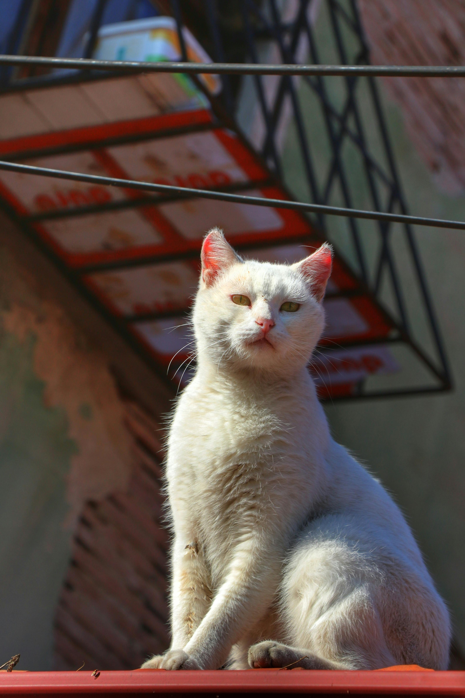

Memories.
My first experience in AkiraChix was one that was the most memorable ones I've ever heard. One of the few good memories I have include:
- Interaction with people from different nationalities.
- Learning new languages and cultures
- Comfortale residential areas.
- Learning basic computer interactions.
- Having good delicacies during meal times.
- Strict schedules which has grown my self discipline
Despite the breathtaking memories, there is always a balance in the universe, which brings me to some of the things that i experienced that were not so good. Some of them include:
- Packed up and full hanging lines during laundry days on the weekends.
- Communication barriers between amongst the different nationalities due to different accents.
- Getting homesick and missing to see familiar faces.
- Getting a cold flu as a result of moving to a different geographical region with exactly opposite climatic conditions to the one I was used to.
I did make a new friend. Her name is pepper, and she has the gift of lifting your moods whenever you're down.
Meet Pepper...... She wishes you a wonderful day.